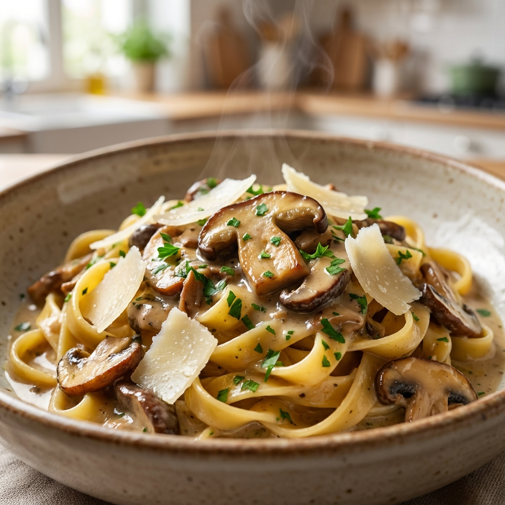

Creamy Wild Mushroom Pasta

Instructions
Prepare the Mushrooms
Clean the mushrooms with a damp cloth and slice them. Heat olive oil in a large skillet over medium-high heat. Add the mushrooms and cook until golden brown and moisture has evaporated, about 8-10 minutes.
Cook the Pasta
While mushrooms are cooking, bring a large pot of salted water to a boil. Add pasta and cook according to package directions until al dente. Reserve 1/2 cup of pasta water before draining.
Make the Sauce
Reduce heat to medium. Add minced garlic to the mushrooms and sauté for 1 minute until fragrant. Pour in the heavy cream and simmer for 2-3 minutes until slightly thickened.
Combine and Serve
Stir in the parmesan cheese. Add the drained pasta to the skillet along with a splash of reserved pasta water if needed to loosen the sauce. Toss to coat evenly. Season with salt and pepper. Garnish with fresh parsley and serve immediately.